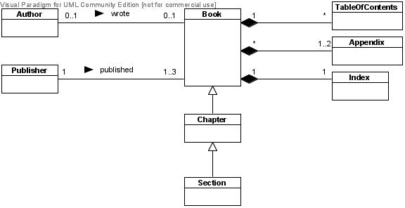
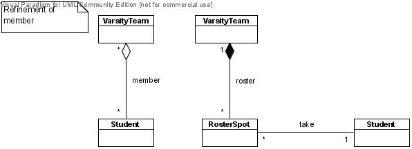
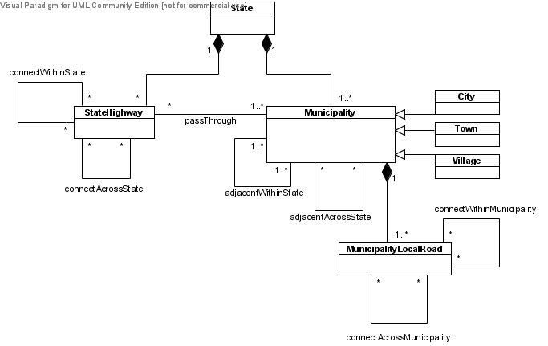

CS 332/780: Object-Oriented Databases
Keitaro Yukawa, Department of Computer Science, Queens College, CUNY
Exercise Set #3
1.
Find and correct the defects in the following model.

2.
Expand the UML college model on the last page of Course Notes #4
by incorporating the following items.
-
A prerequisite relation between courses.
-
Buildings and rooms along with assignments of rooms to course sections.
Also replace the OfficeInfo class and its two relations
by a suitable structure involving the introduced buildings and rooms.
-
A class of academic degrees along with their various relations to
students, courses, Take objects, and departments.
(There are a few possible answers to this question.)
3.
Consider the following composition relation.
This is an example of composition that models a "template" or "schema"
(Course) and its concrete instances people actually experience
in the real world (CourseSection).
Establish an analogous composition relation for each of the following,
and create a few suitable attributes for the classes.
-
Airline flights and their concrete instances.
For example, a flight is a template with a flight number, departure and
arrival airports, scheduled departure and arrival times, etc., while
a flight instance has the actual crew members on board, actual departure
and arrival times, actual airplane used, etc.
-
Theatrical plays and their concrete performances.
For example, the Broadway show "Cats" had been scheduled for a period of time
at a certain theater and was actually performed dozens of times.
4.
Courses and their sections can generally have two or three parts of lecture, recitation, and
lab.
Extend the composite model of Course and CourseSection classes above to
include these three possible parts.
5.
Sometimes an aggregation relation can be refined to
a strong composition relation and an association relation.
For example, the member aggregation relation below can
be refined to the roster strong composition relation
and the take: Student → RosterSpot association relation.
This refinement can also be regarded as a model of the binary relation
member using a relation class, which is interpreted as the class of roster spots.

-
Refine the following aggregation relations analogously.
-
What would be the benefit(s) of the refinement exemplified by these two samples?
6.
Give class schemas that implement all the whole-part and inter-part relations
in the building model in Course Notes #5 – no need to include attributes.
7.
The following is a model of PC components.
Hierarchically decompose this model into a whole-part class diagram and local class
diagrams displaying local, inter-part relations.
You may use composite structure diagrams instead of local class diagrams.
8.
Consider the following model of state highways and municipality local roads.

-
connectWithinState(h1, h2) means that highways h1
and h2 belong to the same state and connect to each other.
-
connectAcrossState(h1, h2) means that highways h1
and h2 belong to two different states and connect to each other at a point
on the state border.
-
adjacentWithinState, adjacentAcrossState, and connectWithinMunicipality
have similar semantics.
-
connectAcrossMunicipality(r1, r2) means that local roads r1
and r2 belong to two different municipalities in the same state and connect to each other at a point
on the municipality border.
-
Hierarchically decompose this model into a whole-part class diagram and local class
diagrams displaying local, inter-part relations.
You may use composite structure diagrams instead of local class diagrams.
The relations that do not belong in any local class diagram should be
included in the whole-part diagram.
-
Introduce the relation connectAcrossState(MunicipalityLocalRoad, MunicipalityLocalRoad) where
connectAcrossState(r1, r2) means r1 and r2 belong
to two different states and connect to each other at a point
on the state border.
Is this relation local to any of the classes in the diagram?
If so, include it
in a suitable local class diagram (or a suitable composite structure diagram);
otherwise include it in the whole-part diagram.